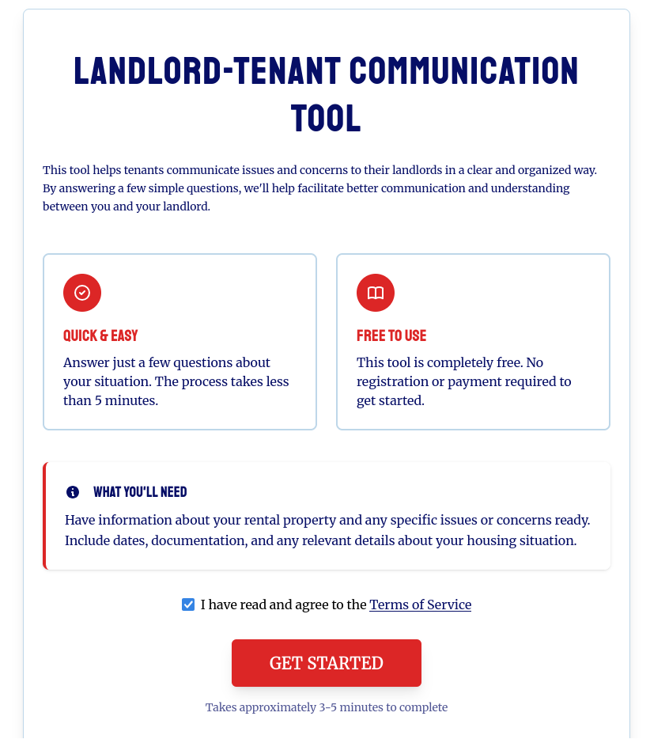

Landlord-Tenant Communication Tool
This is a tool, worked on in collaboration with classmates, which aims to beutify the language used by tenants when communicating issues to their landlords. I worked on the frontend side of things, ensuring that the form flowed nicely and the site was accessible.
| Skills learned | Skills used |
|---|---|
| React | Agile |
| Typescript | Git |
| Trello | Figma |
